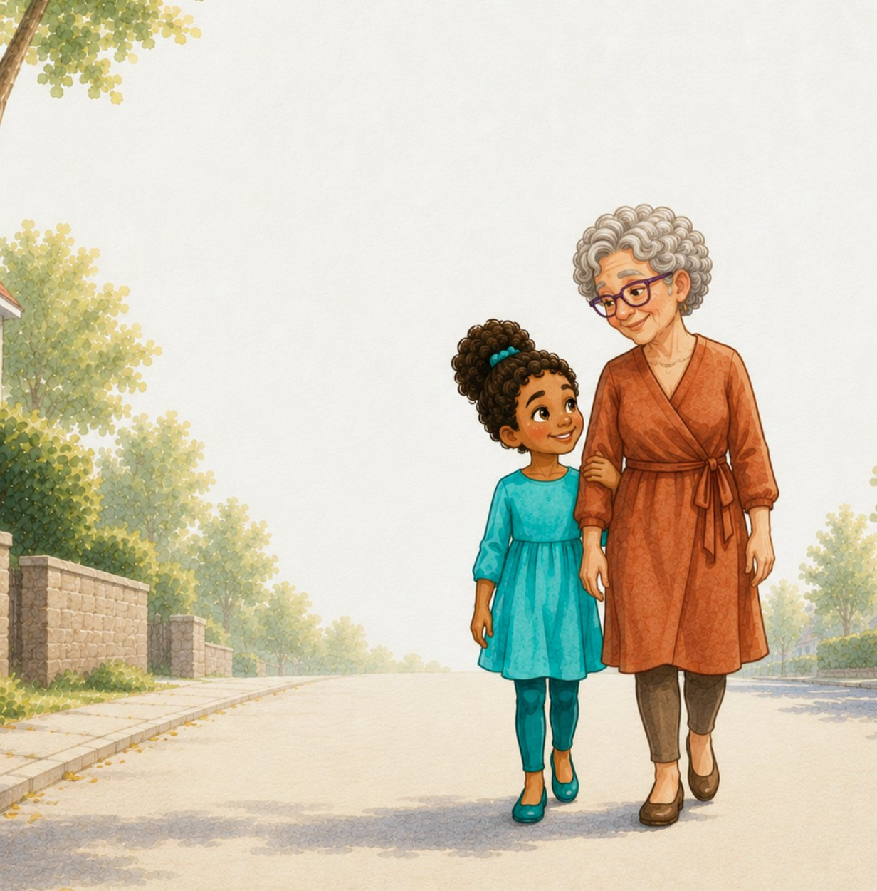

About the Author
Victoria
Asbury-Kimmel
Victoria Asbury-Kimmel is a wife and mother of three young children. Although she was not raised Jewish, she and her husband are raising their children in a Jewish home, practicing the traditions, celebrating the holidays, and teaching the values that shape their family’s life.
As a Black American raising biracial children, Victoria wants families like hers to be represented in children’s books. She believes every child deserves to see families that reflect the richness of the world around them, including in Jewish stories.
When she’s not writing children’s books, Victoria is a sociologist whose research examines how social experiences shape people’s beliefs and attitudes. She understands the powerful role that books and other media can play in how children see themselves and others.
Through Noa and Bubbe, she hopes to create warm, engaging stories that introduce Jewish traditions while celebrating family, kindness, and belonging.

The series
Noa + Bubbe
The books follow Noa, Bubbe, and their family as they experience Jewish holidays and traditions together.